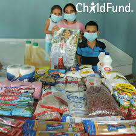
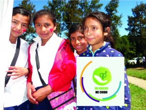

AGUA LIMPIA
¿QUIERES CONOCER LO QUE HACEMOS POR MEJORAR LA CALIDAD DE AGUA QUE CONSUMEN LAS NIÑAS Y LOS NIÑOS?
Breve descripción del Proyecto
Este Proyecto es ejecutado bajo el convenio marco
“Agua limpia para los niños” entre Procter & Gamble
y ChildFund Honduras, trabaja para mejorar el acceso
a agua limpia en comunidades que no cuentan con agua
apta para el consumo.
Objetivos
Mejorar el acceso a agua segura en comunidades cuya población se encuentre en situación crítica con acceso limitado a este vital líquido, con el fin de propiciar la reducción de enfermedades en sus habitantes, y especialmente, en los niños y niñas, como resultado de la ingesta de agua no potable.
Poblacion Meta
1,821 familias – 8,312 personas 1,983 niños de 6 a 14 años en 26 escuelas
AREA DE COBERTURA
1. Francisco Morazán: Curaren Lepaterique 18 comunidades 2. Santa Bárbara: Trinidad Chinda San José de Colinas 11 comunidades
INICIO

